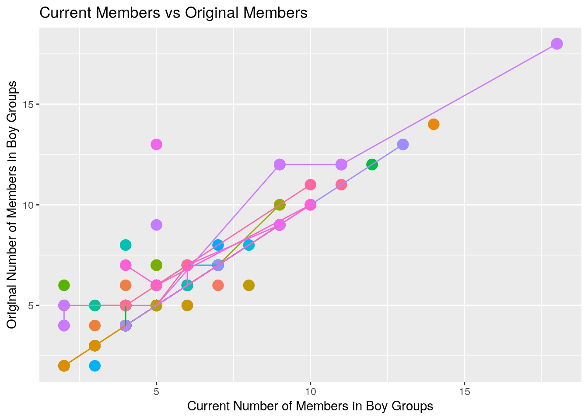
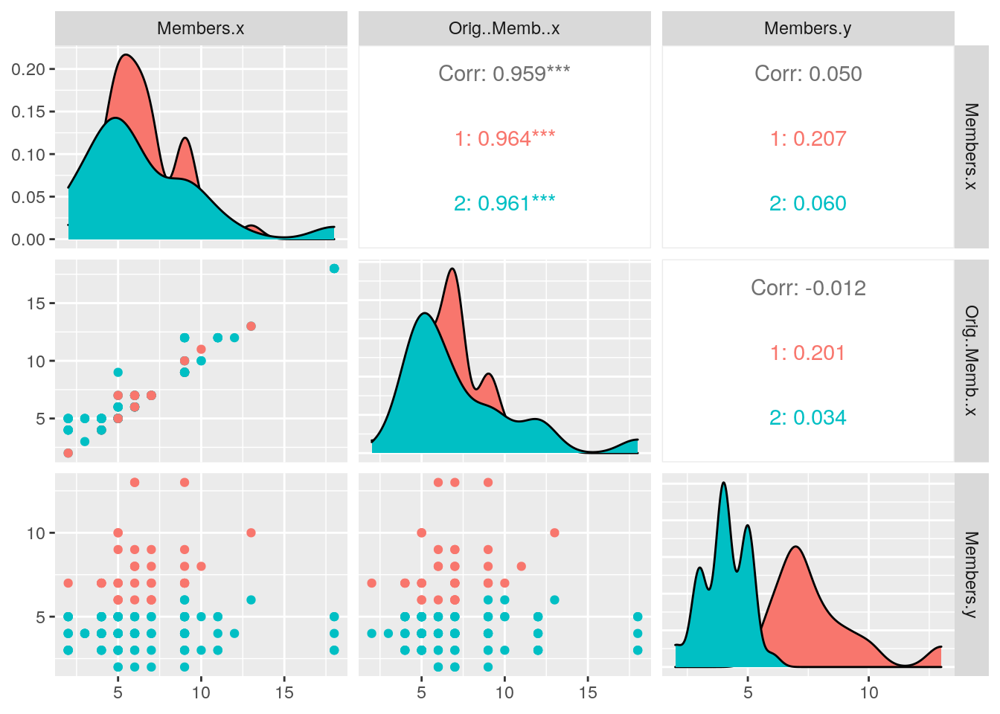

knitr::opts_chunk$set(echo = TRUE, eval = TRUE, fig.align = "center", warning = F, message = F,
tidy=TRUE, tidy.opts=list(width.cutoff=60), R.options=list(max.print=100))The datasets contain information about different boy and girl groups in K-pop industry. The datas are consisted of the English and Korean names of the groups, their debut date, company name, number of current members and original members, their fandom name, and whether they are currently active or not. The data was acquired through the K-pop Database in https://dbkpop.com/. I decided to choose this data set because I am from South Korea and used to listen to K-pop.
# install.packages('tidyverse') install.packages('dplyr')
# install.packages('tidyr') install.packages('ggplot2')
# install.packages('pastecs') install.packages('readxl')
# install.packages('Hmisc')
library(pastecs)
library(tidyverse)
library(dplyr)
library(tidyr)
library(readxl)
library(Hmisc)
library(ggplot2)boygroup <- read.csv(file = "boygroups.csv", header = TRUE, quote = "\"",
stringsAsFactors = TRUE, strip.white = TRUE)
girlgroup <- read.csv("girlgroups.csv", header = TRUE, quote = "\"",
stringsAsFactors = TRUE, strip.white = TRUE)
boygroup %>% left_join(girlgroup, by = "Company")## Name.x Short.x Korean.Name.x Debut.x Company Members.x Orig..Memb..x
## 1 100% 백퍼센트 2012-09-18 TOP Media 4 7
## 2 14U 원포유 2017-04-17 BG 14 14
## 3 1the9 원더나인 2019-02-09 MBK 9 9
## 4 1the9 원더나인 2019-02-09 MBK 9 9
## 5 1the9 원더나인 2019-02-09 MBK 9 9
## Fanclub.Name.x Active.x Name.y Short.y Korean.Name.y Debut.y Members.y
## 1 Perfection Yes <NA> <NA> <NA> <NA> NA
## 2 Yes <NA> <NA> <NA> <NA> NA
## 3 Yes DIA 다이아 2015-07-14 7
## 4 Yes F-ve Dolls 5Dolls 파이브돌스 2011-01-20 6
## 5 Yes T-ara 티아라 2009-07-29 4
## Orig..Memb..y Fanclub.Name.y Active.y
## 1 NA <NA> <NA>
## 2 NA <NA> <NA>
## 3 7 AID Yes
## 4 5 No
## 5 6 QUEEN'S Hiatus
## [ reached 'max' / getOption("max.print") -- omitted 219 rows ]kpop_group_joined <- boygroup %>% left_join(girlgroup, by = "Company")
pivot_wider(kpop_group_joined)## # A tibble: 224 x 17
## Name.x Short.x Korean.Name.x Debut.x Company Members.x Orig..Memb..x
## <fct> <fct> <fct> <fct> <fct> <int> <int>
## 1 100% "" 백퍼센트 2012-0… TOP Me… 4 7
## 2 14U "" 원포유 2017-0… BG 14 14
## 3 1the9 "" 원더나인 2019-0… MBK 9 9
## 4 1the9 "" 원더나인 2019-0… MBK 9 9
## 5 1the9 "" 원더나인 2019-0… MBK 9 9
## 6 24K "" 투포케이 2012-0… Choeun 8 6
## 7 2AM "" 투에이엠 2008-0… JYP, B… 4 4
## 8 2PM "" 투피엠 2008-0… JYP 6 7
## 9 2PM "" 투피엠 2008-0… JYP 6 7
## 10 2PM "" 투피엠 2008-0… JYP 6 7
## # … with 214 more rows, and 10 more variables: Fanclub.Name.x <fct>,
## # Active.x <fct>, Name.y <fct>, Short.y <fct>, Korean.Name.y <fct>,
## # Debut.y <fct>, Members.y <int>, Orig..Memb..y <int>, Fanclub.Name.y <fct>,
## # Active.y <fct>gather(kpop_group_joined)## key value
## 1 Name.x 100%
## 2 Name.x 14U
## 3 Name.x 1the9
## 4 Name.x 1the9
## 5 Name.x 1the9
## 6 Name.x 24K
## 7 Name.x 2AM
## 8 Name.x 2PM
## 9 Name.x 2PM
## 10 Name.x 2PM
## 11 Name.x 2PM
## 12 Name.x 2PM
## 13 Name.x 8Eight
## 14 Name.x A-JAX
## 15 Name.x A-JAX
## 16 Name.x A-JAX
## 17 Name.x A.C.E
## 18 Name.x A.cian
## 19 Name.x A6P
## 20 Name.x AB6IX
## 21 Name.x AlphaBat
## 22 Name.x ASTRO
## 23 Name.x ASTRO
## 24 Name.x ATEEZ
## 25 Name.x B.A.P
## 26 Name.x B.A.P
## 27 Name.x B.Heart
## 28 Name.x B.I.G
## 29 Name.x B.I.G
## 30 Name.x B1A4
## 31 Name.x Be.A
## 32 Name.x Be.A
## 33 Name.x Beatwin
## 34 Name.x BIGBANG
## 35 Name.x BIGBANG
## 36 Name.x Bigflo
## 37 Name.x BIGSTAR
## 38 Name.x BLACK6IX
## 39 Name.x Blanc7
## 40 Name.x BLK
## 41 Name.x Block B
## 42 Name.x Boyfriend
## 43 Name.x Boyfriend
## 44 Name.x Boys Republic
## 45 Name.x BtoB
## 46 Name.x BtoB
## 47 Name.x BtoB
## 48 Name.x BTS
## 49 Name.x C-Clown
## 50 Name.x CICI
## [ reached 'max' / getOption("max.print") -- omitted 3758 rows ]I used the function left_join to combine the k-pop boy group data set and the girl group data set because the both data sets had similar variables so I did not want boy and girl group information to be mixed, and I wanted to have them next to each other as separate variables. I joined them by the entertainment company name so I can have the companies with at least one girl group and one boy group for the easy compare. The boy k-pop group data set had 147 different groups with 9 different variables and the girl group had 152 different groups with 9 different variables. When the data sets were combined, 75 groups were dropped because they were from the companies with just one type of group.
filter(kpop_group_joined, ("Members" > 1 & "Orig.Memb." > 2))## Name.x Short.x Korean.Name.x Debut.x Company Members.x Orig..Memb..x
## 1 100% 백퍼센트 2012-09-18 TOP Media 4 7
## 2 14U 원포유 2017-04-17 BG 14 14
## 3 1the9 원더나인 2019-02-09 MBK 9 9
## 4 1the9 원더나인 2019-02-09 MBK 9 9
## 5 1the9 원더나인 2019-02-09 MBK 9 9
## Fanclub.Name.x Active.x Name.y Short.y Korean.Name.y Debut.y Members.y
## 1 Perfection Yes <NA> <NA> <NA> <NA> NA
## 2 Yes <NA> <NA> <NA> <NA> NA
## 3 Yes DIA 다이아 2015-07-14 7
## 4 Yes F-ve Dolls 5Dolls 파이브돌스 2011-01-20 6
## 5 Yes T-ara 티아라 2009-07-29 4
## Orig..Memb..y Fanclub.Name.y Active.y
## 1 NA <NA> <NA>
## 2 NA <NA> <NA>
## 3 7 AID Yes
## 4 5 No
## 5 6 QUEEN'S Hiatus
## [ reached 'max' / getOption("max.print") -- omitted 219 rows ]member_over2 <- filter(kpop_group_joined, ("Members.x" > 1 &
"Members.y" > 2))arrange(member_over2, Members.x)## Name.x Short.x Korean.Name.x Debut.x Company Members.x
## 1 Beatwin 비트윈 2014-01-06 Elen 2
## 2 Fly to the Sky 플라이 투 더 스카이 1999-11-21 SM, H2 2
## 3 Homme 옴므 2010-06-28 Big Hit 2
## 4 JBJ95 제이비제이95 2018-10-30 Hunus 2
## 5 MXM 엠엑스엠 2017-09-06 Brand New 2
## Orig..Memb..x Fanclub.Name.x Active.x Name.y Short.y Korean.Name.y Debut.y
## 1 6 Hiatus <NA> <NA> <NA> <NA>
## 2 2 Fly High Yes <NA> <NA> <NA> <NA>
## 3 2 Yes GLAM 글램 2012-07-16
## 4 2 Yes ELRIS 엘리스 2017-07-01
## 5 2 Yes <NA> <NA> <NA> <NA>
## Members.y Orig..Memb..y Fanclub.Name.y Active.y
## 1 NA NA <NA> <NA>
## 2 NA NA <NA> <NA>
## 3 4 4 No
## 4 7 5 Yes
## 5 NA NA <NA> <NA>
## [ reached 'max' / getOption("max.print") -- omitted 219 rows ]member_arrange <- arrange(member_over2, Members.x)
select(kpop_group_joined, Name.y, Company, Members.y, Debut.y,
Orig..Memb..y, Active.y)## Name.y Company Members.y Debut.y Orig..Memb..y Active.y
## 1 <NA> TOP Media NA <NA> NA <NA>
## 2 <NA> BG NA <NA> NA <NA>
## 3 DIA MBK 7 2015-07-14 7 Yes
## 4 F-ve Dolls MBK 6 2011-01-20 5 No
## 5 T-ara MBK 4 2009-07-29 6 Hiatus
## 6 <NA> Choeun NA <NA> NA <NA>
## 7 <NA> JYP, Big Hit NA <NA> NA <NA>
## 8 15& JYP 2 2012-10-05 2 No
## 9 ITZY JYP 5 2019-02-12 5 Yes
## 10 miss A JYP 3 2010-07-01 4 No
## 11 TWICE JYP 9 2015-10-20 9 Yes
## 12 Wonder Girls JYP 4 2007-02-13 5 No
## 13 GLAM Big Hit 4 2012-07-16 4 No
## 14 April DSP 6 2015-08-24 6 Yes
## 15 KARA DSP 4 2007-03-29 5 No
## 16 Rainbow DSP 7 2010-08-12 7 No
## [ reached 'max' / getOption("max.print") -- omitted 208 rows ]Totalgroup <- select(kpop_group_joined, Name.x, Debut.x, Company,
Members.x, Orig..Memb..x, Active.x, Name.y, Debut.y, Members.y,
Orig..Memb..y, Active.y)
mutate(Totalgroup, memberstayed = Members.y/Orig..Memb..y)## Name.x Debut.x Company Members.x Orig..Memb..x Active.x Name.y
## 1 100% 2012-09-18 TOP Media 4 7 Yes <NA>
## 2 14U 2017-04-17 BG 14 14 Yes <NA>
## 3 1the9 2019-02-09 MBK 9 9 Yes DIA
## 4 1the9 2019-02-09 MBK 9 9 Yes F-ve Dolls
## 5 1the9 2019-02-09 MBK 9 9 Yes T-ara
## 6 24K 2012-09-06 Choeun 8 6 Yes <NA>
## 7 2AM 2008-06-21 JYP, Big Hit 4 4 No <NA>
## 8 2PM 2008-07-04 JYP 6 7 Yes 15&
## Debut.y Members.y Orig..Memb..y Active.y memberstayed
## 1 <NA> NA NA <NA> NA
## 2 <NA> NA NA <NA> NA
## 3 2015-07-14 7 7 Yes 1.0000000
## 4 2011-01-20 6 5 No 1.2000000
## 5 2009-07-29 4 6 Hiatus 0.6666667
## 6 <NA> NA NA <NA> NA
## 7 <NA> NA NA <NA> NA
## 8 2012-10-05 2 2 No 1.0000000
## [ reached 'max' / getOption("max.print") -- omitted 216 rows ]BigCompany <- Totalgroup %>% group_by(Company) %>% filter(n() >
2)
summarise(BigCompany, mem = mean(Members.x, na.rm = TRUE))## # A tibble: 14 x 2
## Company mem
## <fct> <dbl>
## 1 Big Hit 4.25
## 2 Chrome 3.5
## 3 Cube 8
## 4 DSP 5
## 5 FNC 5
## 6 JYP 6.75
## 7 MBK 8
## 8 Pledis 9
## 9 SM 7.29
## 10 Star Empire 7
## 11 Starship 7
## 12 TOP Media 6.33
## 13 TS 8
## 14 YG 4.67kpop_group_joined %>% summarise_if(is.numeric, min, na.rm = TRUE)## Members.x Orig..Memb..x Members.y Orig..Memb..y
## 1 2 2 2 2kpop_group_joined %>% summarise_if(is.numeric, max, na.rm = TRUE)## Members.x Orig..Memb..x Members.y Orig..Memb..y
## 1 18 18 13 12kpop_group_joined %>% summarise_if(is.numeric, var, na.rm = TRUE)## Members.x Orig..Memb..x Members.y Orig..Memb..y
## 1 8.804432 8.4791 4.405843 5.423372kpop_group_joined %>% summarise_if(is.numeric, sd, na.rm = TRUE)## Members.x Orig..Memb..x Members.y Orig..Memb..y
## 1 2.967226 2.911889 2.09901 2.328813kpop_group_joined %>% summarise_if(is.numeric, quantile, na.rm = TRUE)## Members.x Orig..Memb..x Members.y Orig..Memb..y
## 1 2 2 2 2
## 2 4 5 4 4
## 3 6 6 5 5
## 4 7 7 6 8
## 5 18 18 13 12Totalgroup %>% group_by(Company) %>% summarise_all(mean, na.rm = TRUE)## # A tibble: 111 x 11
## Company Name.x Debut.x Members.x Orig..Memb..x Active.x Name.y Debut.y
## <fct> <dbl> <dbl> <dbl> <dbl> <dbl> <dbl> <dbl>
## 1 (Genie) NA NA 7 7 NA NA NA
## 2 A team NA NA 7 6 NA NA NA
## 3 All-S NA NA 9 9 NA NA NA
## 4 Amuse NA NA 5 6 NA NA NA
## 5 Around… NA NA 4 6 NA NA NA
## 6 B2M NA NA 3 4 NA NA NA
## 7 Beat NA NA 5 5 NA NA NA
## 8 BG NA NA 14 14 NA NA NA
## 9 Big Hit NA NA 4.25 4.25 NA NA NA
## 10 BLACK … NA NA 6 6 NA NA NA
## # … with 101 more rows, and 3 more variables: Members.y <dbl>,
## # Orig..Memb..y <dbl>, Active.y <dbl>Totalgroup %>% group_by(Active.x, Active.y) %>% summarise_all(n_distinct,
na.rm = TRUE)## # A tibble: 10 x 11
## # Groups: Active.x [3]
## Active.x Active.y Name.x Debut.x Company Members.x Orig..Memb..x Name.y
## <fct> <fct> <int> <int> <int> <int> <int> <int>
## 1 Hiatus No 1 1 1 1 1 2
## 2 Hiatus <NA> 3 3 3 3 3 0
## 3 No Hiatus 1 1 1 1 1 1
## 4 No No 11 11 10 7 6 14
## 5 No Yes 10 10 9 5 4 10
## 6 No <NA> 18 18 16 6 7 0
## 7 Yes Hiatus 2 2 2 2 2 2
## 8 Yes No 33 33 19 12 9 26
## 9 Yes Yes 40 40 21 9 10 25
## 10 Yes <NA> 58 58 54 11 11 0
## # … with 3 more variables: Debut.y <int>, Members.y <int>, Orig..Memb..y <int>kpop_group_joined %>% summarise(cor(Members.x, Members.y, use = "pair"))## cor(Members.x, Members.y, use = "pair")
## 1 0.04956097I used the summarise_if function to find the minimum, maxium, variance, standard deviation, and quantile numbers of the numeric variables that are in the combined dataset. It is interesting how the minimum number of current members per group was the same for both boy and girl groups but the maximum number of current members per group varied greatly between the boy and girl groups. While the largest boy group had 18 members, the largest girl group had 13 members.
Totalgroup %>% select_if(is.numeric) %>% cor(use = "pair")## Members.x Orig..Memb..x Members.y Orig..Memb..y
## Members.x 1.00000000 0.93492305 0.04956097 0.01944351
## Orig..Memb..x 0.93492305 1.00000000 -0.01183075 -0.02808179
## Members.y 0.04956097 -0.01183075 1.00000000 0.80903796
## Orig..Memb..y 0.01944351 -0.02808179 0.80903796 1.00000000cornum <- Totalgroup %>% select_if(is.numeric) %>% cor(use = "pair")
tidynum <- cornum %>% as.data.frame %>% rownames_to_column("members1") %>%
pivot_longer(-1, names_to = "members2", values_to = "correlation")
tidynum %>% ggplot(aes(members1, members2, fill = correlation)) +
geom_tile() + scale_fill_gradient2(low = "white", mid = "pink",
high = "red") + geom_text(aes(label = round(correlation,
2)), color = "black", size = 5) + theme(axis.text.x = element_text(angle = 75,
hjust = 1)) + coord_fixed() + labs(title = "Number of Members Correlation")The numeric variables that I included in this heat map are the current and the original number of members for both boy and girl groups. The map shows the correlation between each of the variables, with 0 being there is no correlation between the variables and 1 being there is a greatest correlation between the two variables. The map shows that while the number of original and the current members in boy groups showed 0.93 correlation, the number of original and the current members in girl groups showed 0.81 correlation. This could mean that there were more discrepancy in number of members who remained in the girl groups than the boy groups. It is also interesting that while the original members of boy and girl groups showed weak negative correlation (-0.03), the current members of boy and girl group showed weak positive correlation of 0.05. The original and the current number of members of opposite gender showed very weak correlation of -0.01 and 0.02.
ggplot(data = Totalgroup, aes(x = Members.x, y = Orig..Memb..x,
color = Company)) + geom_point(size = 4) + geom_line(aes(group = Company)) +
theme(legend.position = "none") + labs(title = "Current Members vs Original Members") +
labs(x = "Current Number of Members in Boy Groups", y = "Original Number of Members in Boy Groups")
The data includes the current number of members in different k-pop boy groups as well as the original number of members when they debuted. The point colors are organized by different companies. The plot shows that for most companies, there’s a linear relationship between the current and the original number of members in each group. The number of members are clustered between approximately 2 members to 8 members.
ggplot(data = Totalgroup, aes(x = Members.y, y = Orig..Memb..y,
color = Company)) + geom_point(size = 4) + geom_line(aes(group = Company)) +
theme(legend.position = "none") + scale_x_continuous(breaks = pretty(Totalgroup$Members.y,
n = 12)) + scale_y_continuous(breaks = pretty(Totalgroup$Orig..Memb..y,
n = 12)) + xlab("Current Number of Members in Girl Groups") +
ylab("Original Number of Members in Girl Groups") + labs(color = "Company") +
labs(title = "Original Number of Members vs. Current Number of Members")This data includes current number of members in different k-pop girl groups as wells the original number of members when they debuted. The points were organized by different companies they are from. The data generally shows the linear relationship between the current and the original number of members, but I could also see a significant drop in number of members for several groups. The data also shows that while each company had a wide range of number of members per group (2-15), the each company generally had girl groups with similar number of members.
ggplot(Totalgroup, aes(x = Company)) + geom_bar(aes(y = Members.y,
color = Active.y), stat = "summary", fun = mean) + theme(axis.text.x = element_text(angle = 90,
hjust = 1)) + xlab("Company") + ylab("Current Members in groups") +
labs(color = "Active Status") + scale_fill_gradient2(low = "white",
mid = "yellow", high = "brown") + labs(title = "Average Group Member Numbers by Company")The data shows the current number of members for the girl groups in entertainment companies in South Korea. The plot also shows the percentage of groups that are currently active, inactive, or on a break. The data shows that there are multiple companies that show no current members, meaning they currently do not have any girl groups that It is interesting how half of YG, Cube, DSP groups are currently inactive.
# install.packages('cluster')
library(cluster) #load the cluster package
Totalgroup2 <- na.omit(Totalgroup) #omit missing values
clust_dat <- Totalgroup2 %>% dplyr::select(Members.x, Orig..Memb..x,
Members.y) #select what variables you want to use for clustering
sil_width <- vector() #empty vector to hold mean sil width
for (i in 2:10) {
kms <- kmeans(clust_dat, centers = i) #compute k-means solution
sil <- silhouette(kms$cluster, dist(clust_dat)) #get sil widths
sil_width[i] <- mean(sil[, 3]) #take averages
}
sil_width[i]## [1] 0.3375893ggplot() + geom_line(aes(x = 1:10, y = sil_width)) + scale_x_continuous(name = "k",
breaks = 1:10) #plot the silhouette to visualize kmeans1 <- clust_dat %>% scale %>% kmeans(2) #scale the variables and set number of clusters k
kmeans1## K-means clustering with 2 clusters of sizes 41, 104
##
## Cluster means:
## Members.x Orig..Memb..x Members.y
## 1 1.266626 1.2951961 0.04014869
## 2 -0.499343 -0.5106062 -0.01582785
##
## Clustering vector:
## 3 4 5 8 9 10 11 12 13 14 15 16 19 21 22 23 25 26 28 29
## 1 1 1 2 2 2 2 2 2 2 2 2 2 2 2 2 2 2 2 2
## 30 31 32 34 35 37 42 43 45 46 47 48 49 51 52 53 54 55 56 60
## 2 2 2 2 2 2 2 2 2 2 2 2 2 2 2 2 2 1 1 2
## 61 62 63 64 65 67 68 69 70 71 73 74 76 77 78 79 80 81 84 85
## 2 2 2 2 1 1 1 1 1 1 2 2 1 2 2 2 2 2 2 2
## 86 87 88 90 92 93 94 95 97 98 99 100 102 106 109 110 111 115 118 120
## 2 2 2 2 2 2 2 2 2 2 2 2 2 2 2 2 2 2 2 2
## 122 123 132 133 134 135 136 137 138 140 142 143 144 145 146 147 148 155 156 157
## 2 2 2 2 1 1 1 1 1 1 2 2 2 2 1 1 1 1 1 1
## [ reached getOption("max.print") -- omitted 45 entries ]
##
## Within cluster sum of squares by cluster:
## [1] 108.6444 135.6601
## (between_SS / total_SS = 43.4 %)
##
## Available components:
##
## [1] "cluster" "centers" "totss" "withinss" "tot.withinss"
## [6] "betweenss" "size" "iter" "ifault"kmeansclust <- clust_dat %>% as.data.frame %>% mutate(cluster = as.factor(kmeans1$cluster)) #add the vector to the original data
kmeansclust## Members.x Orig..Memb..x Members.y cluster
## 1 9 9 7 1
## 2 9 9 6 1
## 3 9 9 4 1
## 4 6 7 2 2
## 5 6 7 5 2
## 6 6 7 3 2
## 7 6 7 9 2
## 8 6 7 4 2
## 9 3 3 4 2
## 10 5 7 6 2
## 11 5 7 4 2
## 12 5 7 7 2
## 13 6 6 4 2
## 14 5 9 3 2
## 15 6 6 6 2
## 16 6 6 8 2
## 17 6 6 3 2
## 18 6 6 5 2
## 19 5 5 3 2
## 20 5 5 5 2
## 21 5 5 7 2
## 22 3 5 4 2
## 23 3 5 4 2
## 24 4 5 4 2
## 25 4 5 4 2
## [ reached 'max' / getOption("max.print") -- omitted 120 rows ]I chose the number of current and original members in boy groups and the current number of members in girl groups variables for K-Means clustering. I first had to omit the NAs because the function did not work with non-number values, which resulted in loss of some numbers. In order to do the clustering, I first had to determine the number of clusters. Therefore, I chose the Silhouette width and ran the clusters from 2 to 10 to see the most cohesive and separated clusters. After running through the code and looking at the plot for the visual, the highest average silhouette width for my data was 2 so I set my k as 2. I also scaled my variables to standardize the features. Lastly, I added the vector back to the original data using the mutate function.
kmeansclust %>% ggplot(aes(Members.x, Orig..Memb..x, Members.y,
color = cluster)) + geom_point() + xlab("Current Number of Members in Boy Groups") +
ylab("Original Number of Members in Boy Groups") + labs(color = "Cluster") +
labs(title = "Original Number of Members vs. Current Number of Members")# install.packages('GGally')
library(GGally)
ggpairs(kmeansclust, columns = 1:3, aes(color = cluster)) In order to analyze the clusters, I utilized the ggplot2 function to graph the clusters. The blue cluster is the groups with relatively low numbers of current members and low numbers of original members. The red cluster shows groups with high number of current members and high number of original members. I also used ggpairs to analyze different cluster patterns for other x and y values. For the graph with the current boy group member as x axis and the current girl group member as y axis, the blue clusters showed the groups that have low girl members and low to high boy members. The other three graphs showed similar pattern with filled in lines. The last 3 graphs showed the correlation values between the variables.